Chapter 11 Sankey Plots for Visualising Bilateral Migration
11.1 Background
11.1.1 Background
- An alternative approach to visualize bilateral migration are Sankey or alluvial plots.
- Sankey plots feature arrows with width proportional to the flow quantity.
- Named after Irish Captain Sankey, who used to show the energy efficiency of a steam engine in 1898.
- Minard’s plot of Napoleon’s Russian Campaign of 1812 was made in 1869 - before Sankey
- Alluvial plots are a form of Sankey plot
- Contain blocks at nodes (e.g. origin and destination of migraiton flows)
- No space between blocks, implying a meaningful axis, unlike Sankey plots that do have spaces
11.1.2 Men in Napoleon’s 1812 Russian Campaign

11.1.4 Sankey plots in R
- As the number of regions or countries increases the plot become more cumbersome
- Labels for the smaller areas get too small and the plotting area becomes a very long rectangle making it awkward to fit on paper or view on the screen.
- In such cases I prefer chord diagrams
- There are a few packages in R that have functions for Sankey plots, such as sankey, PantaRhei, networkD3, sankeywheel, plotly, ggsankey.
- Also ggalluvial which produces an allivual plot, but without any spaces between each sectors.
- I am going to use ggforce which I think is the most flexible
- At the cost of a new layout for the data set
- Good labels need a some work - as in circlize - because Sankey plots tend to have many set axis
- Migration data tend to have only two set axis (origin and destinations)
11.1.5 Sankey plots in R
- For Sankey plots with ggforce the
gather_set_data()function formats the data so that every migration corridor has two rows for the size of the migration at the origin and destination - Can then use standard
ggplot()function to set up the plot format. The mapping argument includesidthe id of the ribbonsvaluethe size of the ribbonssplitcategories for splitting of the ribbons
- Add on layers for the ribbons themselves using
geom_parallel_sets() - Add blocks at the end of the ribbons to allow for clear identification of origin and destinations using
geom_parallel_sets_axes() - Add labels at the start and end of the ribbons using
geom_parallel_sets_axes()
11.2 Data Format
11.2.1 UN international migrant stock data 2020
- United Nations Department of Economic and Social Affairs Population Division (2020) stock data as before
library(tidyverse)
un <- read_csv(file = "data/un_desa_ims_tidy.csv")
un## # A tibble: 259,357 x 6
## year stock por_name por_code pob_name pob_code
## <dbl> <dbl> <chr> <dbl> <chr> <dbl>
## 1 1990 152986157 WORLD 900 WORLD 900
## 2 1995 161289976 WORLD 900 WORLD 900
## 3 2000 173230585 WORLD 900 WORLD 900
## 4 2005 191446828 WORLD 900 WORLD 900
## 5 2010 220983187 WORLD 900 WORLD 900
## 6 2015 247958644 WORLD 900 WORLD 900
## 7 2020 280598105 WORLD 900 WORLD 900
## 8 1990 15334807 WORLD 900 Sub-Saharan Africa 947
## 9 1995 16488973 WORLD 900 Sub-Saharan Africa 947
## 10 2000 15638014 WORLD 900 Sub-Saharan Africa 947
## # ... with 259,347 more rows11.2.2 UN international migrant stock data 2020
- Plot between World Bank income groups
# codes for income groups
cc <- c(1503:1500, 2003)
d <- un %>%
filter(por_code %in% cc,
pob_code %in% cc,
year == 2020) %>%
rename(orig = pob_name,
dest = por_name) %>%
mutate(stock = stock/1e6)
d## # A tibble: 16 x 6
## year stock dest por_code orig pob_code
## <dbl> <dbl> <chr> <dbl> <chr> <dbl>
## 1 2020 45.8 High-income countries 1503 High-income cou~ 1503
## 2 2020 59.9 High-income countries 1503 Upper-middle-in~ 1502
## 3 2020 58.0 High-income countries 1503 Lower-middle-in~ 1501
## 4 2020 10.5 High-income countries 1503 Low-income coun~ 1500
## 5 2020 5.66 Upper-middle-income countries 1502 High-income cou~ 1503
## 6 2020 20.6 Upper-middle-income countries 1502 Upper-middle-in~ 1502
## 7 2020 18.3 Upper-middle-income countries 1502 Lower-middle-in~ 1501
## 8 2020 10.8 Upper-middle-income countries 1502 Low-income coun~ 1500
## 9 2020 0.961 Lower-middle-income countries 1501 High-income cou~ 1503
## 10 2020 6.45 Lower-middle-income countries 1501 Upper-middle-in~ 1502
## 11 2020 10.5 Lower-middle-income countries 1501 Lower-middle-in~ 1501
## 12 2020 7.93 Lower-middle-income countries 1501 Low-income coun~ 1500
## 13 2020 0.102 Low-income countries 1500 High-income cou~ 1503
## 14 2020 0.579 Low-income countries 1500 Upper-middle-in~ 1502
## 15 2020 2.90 Low-income countries 1500 Lower-middle-in~ 1501
## 16 2020 8.12 Low-income countries 1500 Low-income coun~ 150011.2.3 Data format
- Format data for Sankey plot using
gather_set_data()function in ggforce
library(ggforce)
s <- d %>%
select(orig, dest, stock) %>%
gather_set_data(x = 1:2)
s## # A tibble: 32 x 6
## orig dest stock id x y
## <chr> <chr> <dbl> <int> <chr> <chr>
## 1 High-income countries High-income c~ 45.8 1 orig High-income ~
## 2 Upper-middle-income countries High-income c~ 59.9 2 orig Upper-middle~
## 3 Lower-middle-income countries High-income c~ 58.0 3 orig Lower-middle~
## 4 Low-income countries High-income c~ 10.5 4 orig Low-income c~
## 5 High-income countries Upper-middle-~ 5.66 5 orig High-income ~
## 6 Upper-middle-income countries Upper-middle-~ 20.6 6 orig Upper-middle~
## 7 Lower-middle-income countries Upper-middle-~ 18.3 7 orig Lower-middle~
## 8 Low-income countries Upper-middle-~ 10.8 8 orig Low-income c~
## 9 High-income countries Lower-middle-~ 0.961 9 orig High-income ~
## 10 Upper-middle-income countries Lower-middle-~ 6.45 10 orig Upper-middle~
## # ... with 22 more rows11.2.4 Data format
tail(s)## # A tibble: 6 x 6
## orig dest stock id x y
## <chr> <chr> <dbl> <int> <chr> <chr>
## 1 Lower-middle-income countries Lower-middle-~ 10.5 11 dest Lower-middle-~
## 2 Low-income countries Lower-middle-~ 7.93 12 dest Lower-middle-~
## 3 High-income countries Low-income co~ 0.102 13 dest Low-income co~
## 4 Upper-middle-income countries Low-income co~ 0.579 14 dest Low-income co~
## 5 Lower-middle-income countries Low-income co~ 2.90 15 dest Low-income co~
## 6 Low-income countries Low-income co~ 8.12 16 dest Low-income co~11.3 Parrellel Sets
11.3.1 Default Plot
- Pass the different columns to
ggplot()mappings - The
geom_parallel_sets()plots the ribbons
ggplot(data = s,
mapping = aes(x = x, id = id, value = stock, split = y)) +
geom_parallel_sets()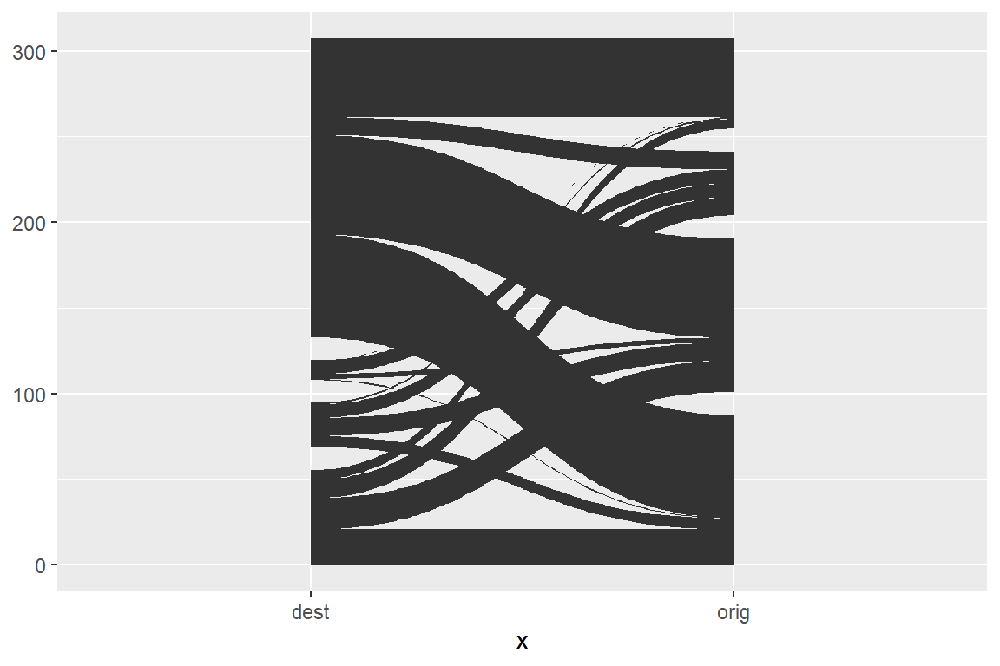
11.3.2 Default Plot
- By default the x-axis goes in alphabetical order
- Use factors to set ordering of categorical variable
levels(s$x)## NULLs <- mutate(s, x = fct_rev(x))
levels(s$x)## [1] "orig" "dest"ggplot(data = s,
mapping = aes(x = x, id = id, value = stock, split = y)) +
geom_parallel_sets()
11.4 Set Axes
11.4.1 Set Axes
- The
geom_parallel_sets_axes()function adds blocks besides the start and end of the ribbons- Set the width (as a proportion) using
axis.width
- Set the width (as a proportion) using
# default axis.width
ggplot(data = s,
mapping = aes(x = x, id = id, value = stock, split = y)) +
geom_parallel_sets() +
geom_parallel_sets_axes()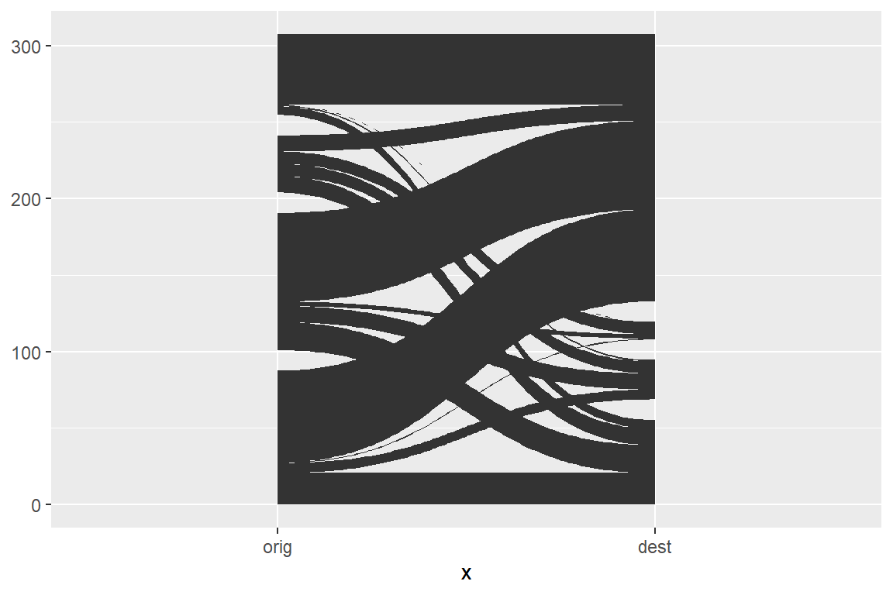
# wider axis.width
ggplot(data = s,
mapping = aes(x = x, id = id, value = stock, split = y)) +
geom_parallel_sets() +
geom_parallel_sets_axes(axis.width = 0.1)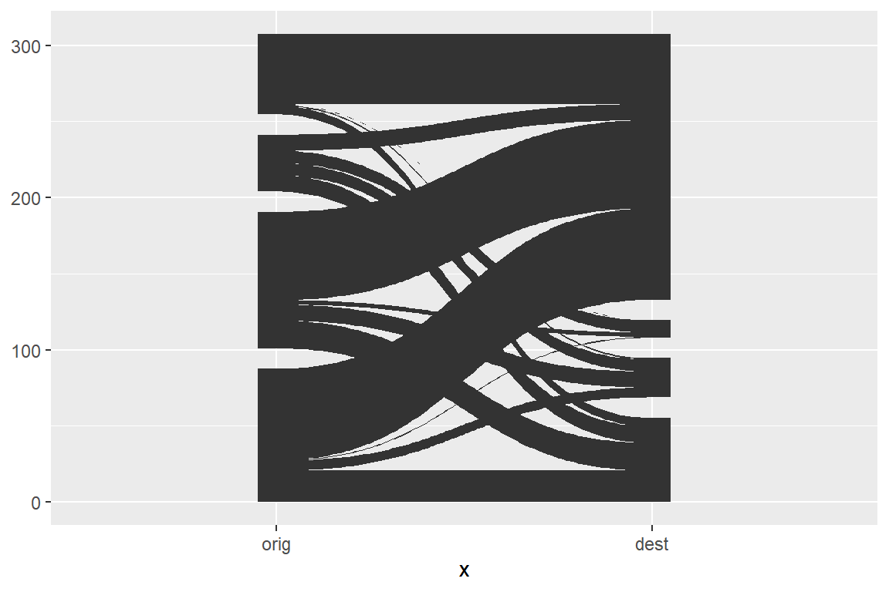
11.5 Colour
11.5.1 Colour
- Use
mappingingeom_parallel_sets()to set the colours- Fill the colours following the origin regions, as was the case in the chord diagrams
- The
geom_parallel_sets_axes()cannot take a fill colour from the data frame
# geom_parallel_sets_axes cannot take fill colours from data
ggplot(data = s, mapping = aes(x = x, id = id, value = stock, split = y, fill = orig)) +
geom_parallel_sets() +
geom_parallel_sets_axes()## Warning: Computation failed in `stat_parallel_sets_axes()`:
## Axis aesthetics must be constant in each split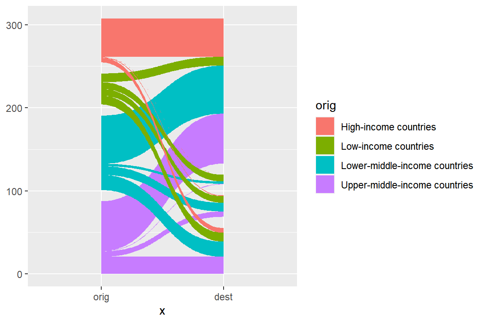
# set fill colour for parallel_sets only
ggplot(data = s, mapping = aes(x = x, id = id, value = stock, split = y)) +
geom_parallel_sets(mapping = aes(fill = orig)) +
geom_parallel_sets_axes()
11.5.2 Ribbon colour - failed axis colour
11.5.3 Ribbon transparency
- Add some transparency in the ribbons using the
alphaargument ingeom_parallel_sets()
# transparency of 0.8
ggplot(data = s, mapping = aes(x = x, id = id, value = stock, split = y)) +
geom_parallel_sets(mapping = aes(fill = orig), alpha = 0.8) +
geom_parallel_sets_axes()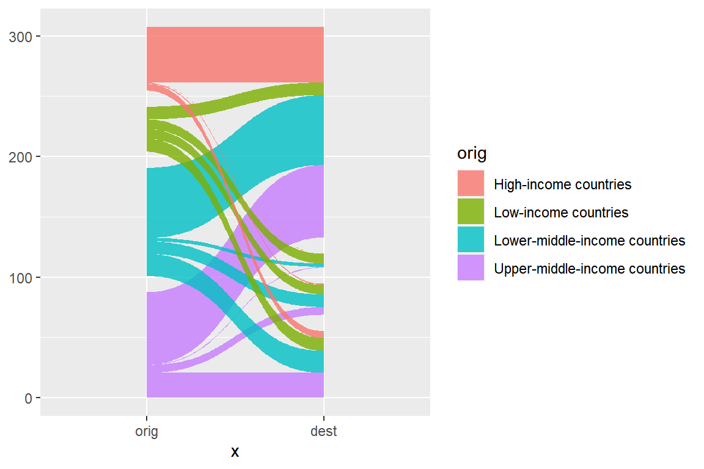
# transparency of 0.2
ggplot(data = s, mapping = aes(x = x, id = id, value = stock, split = y)) +
geom_parallel_sets(mapping = aes(fill = orig), alpha = 0.2) +
geom_parallel_sets_axes()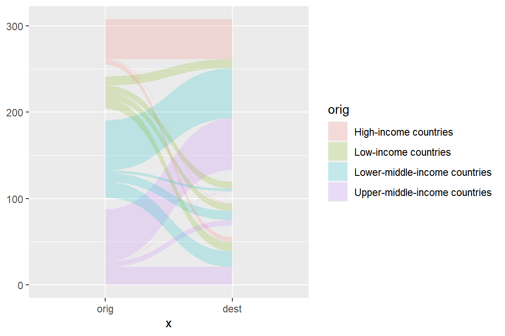
11.5.4 Axis colour
- To see the set axis colours we can draw an outline using the
colourargument.- Also set
fill = "transparent"in order to view the underlying ribbons
- Also set
# geom_parallel_sets_axes is an axis, can provide outline colour only
ggplot(data = s, mapping = aes(x = x, id = id, value = stock, split = y)) +
geom_parallel_sets(mapping = aes(fill = orig), alpha = 0.8) +
geom_parallel_sets_axes(colour = "black")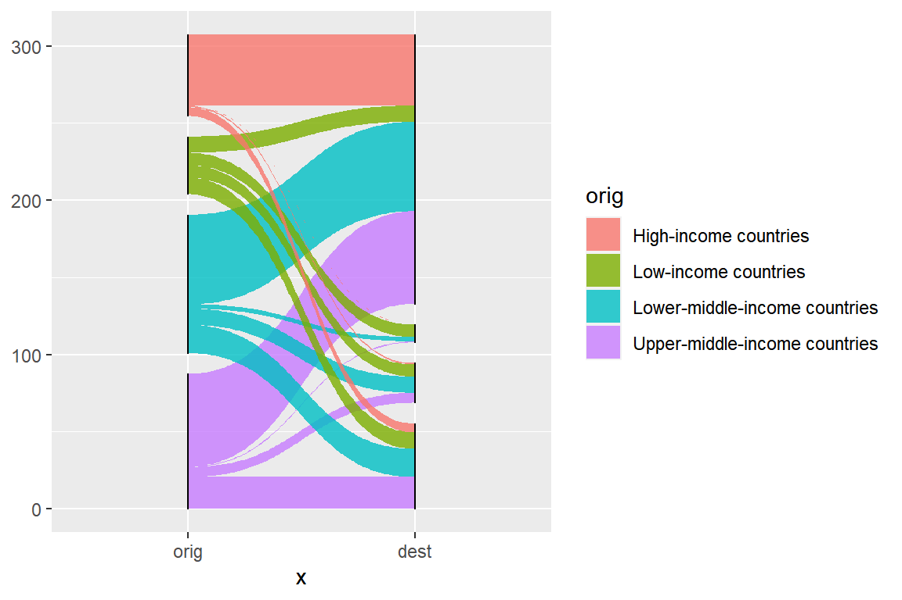
# geom_parallel_sets_axes is an axis, can provide outline colour only
ggplot(data = s, mapping = aes(x = x, id = id, value = stock, split = y)) +
geom_parallel_sets(mapping = aes(fill = orig)) +
geom_parallel_sets_axes(fill = "transparent", colour = "black",
axis.width = 0.1)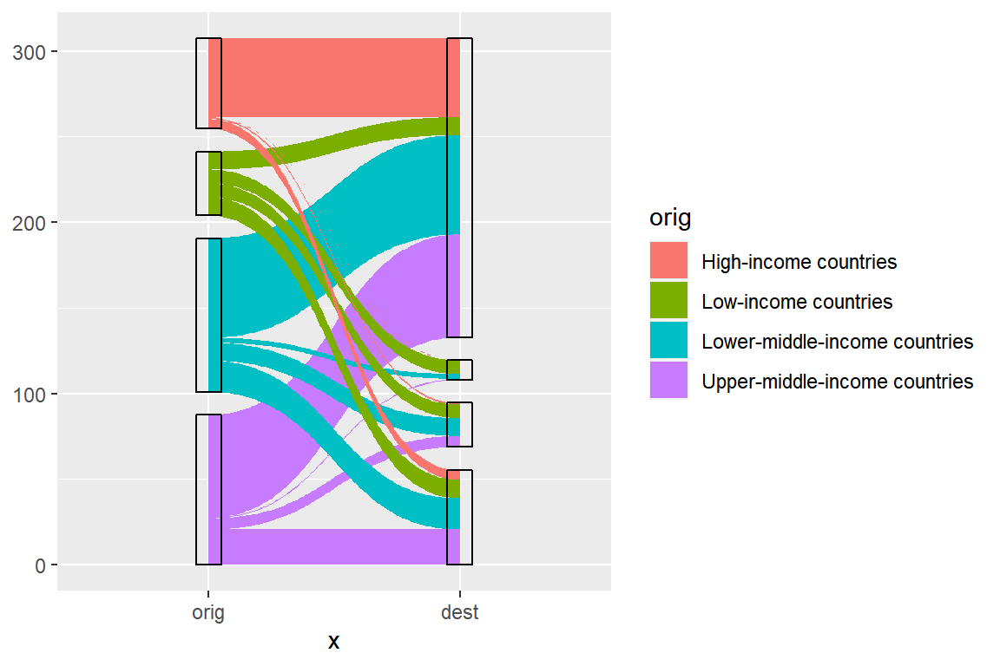
11.5.5 Axis colour
- Tweak the width in
geom_parallel_sets()so that it fills into the axis box- Need to set
fill = "transparent"
- Need to set
ggplot(data = s, mapping = aes(x = x, id = id, value = stock, split = y)) +
geom_parallel_sets(mapping = aes(fill = orig), alpha = 0.8, axis.width = -0.1) +
geom_parallel_sets_axes(fill = "transparent", colour = "black",
axis.width = 0.1)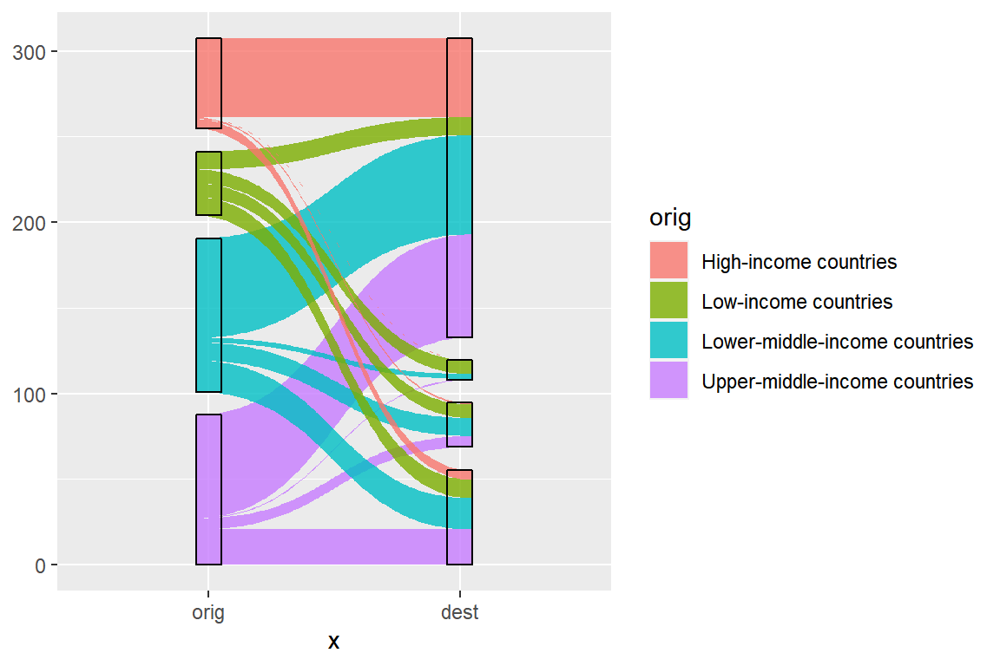
# narrower set axes
ggplot(data = s,mapping = aes(x = x, id = id, value = stock, split = y)) +
geom_parallel_sets(mapping = aes(fill = orig), alpha = 0.8, axis.width = -0.05) +
geom_parallel_sets_axes(fill = "transparent", colour = "black",
axis.width = 0.05)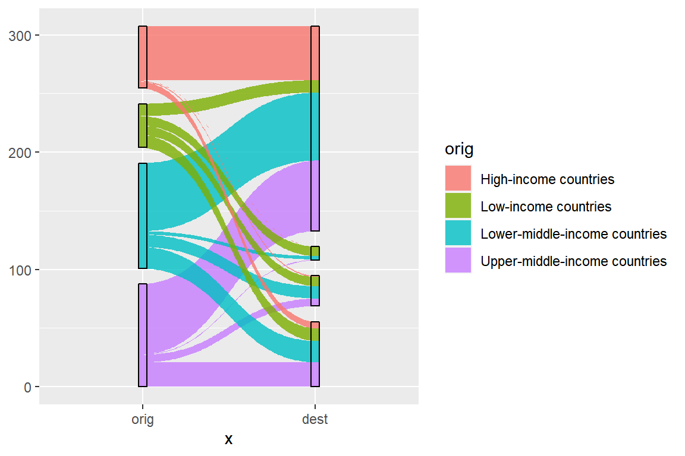
11.6 Labels
11.6.1 Labels
- Add labels on the x-axis using
scale_x_discrete()from ggplot2 - Add labels to the sets using
geom_parallel_sets_labels()from ggforce- Terrible default positions and angles if labels are not very short.
ggplot(data = s, mapping = aes(x = x, id = id, value = stock, split = y)) +
geom_parallel_sets(mapping = aes(fill = orig), alpha = 0.8, axis.width = -0.05) +
geom_parallel_sets_axes(fill = "transparent", colour = "black",
axis.width = 0.05) +
guides(fill = "none") +
geom_parallel_sets_labels() +
scale_x_discrete(labels = c(orig = "Place of Birth",
dest = "Place of Residence"))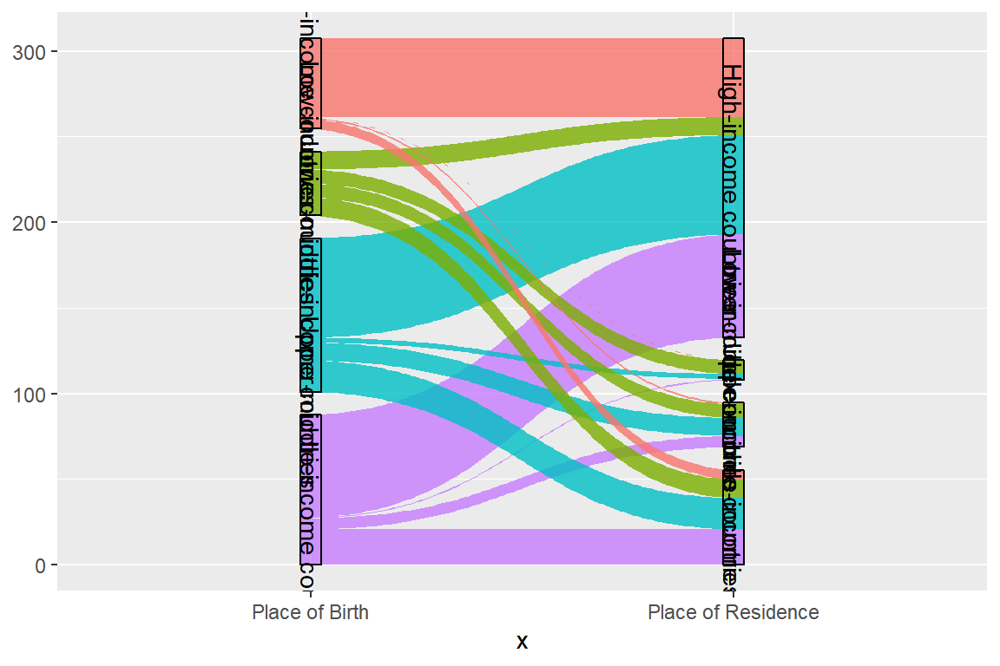
ggplot(data = s, mapping = aes(x = x, id = id, value = stock, split = y)) +
geom_parallel_sets(mapping = aes(fill = orig), alpha = 0.8, axis.width = -0.05) +
geom_parallel_sets_axes(fill = "transparent", colour = "black",
axis.width = 0.05) +
guides(fill = "none") +
geom_parallel_sets_labels(angle = 0) +
scale_x_discrete(labels = c(orig = "Place of Birth",
dest = "Place of Residence"))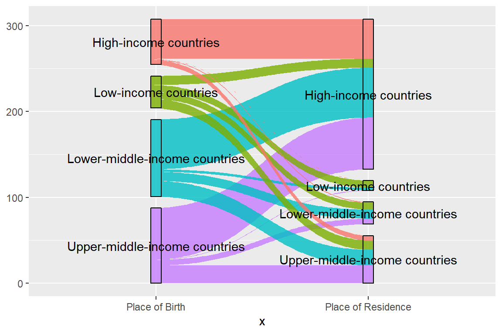
11.6.2 Labels
- Change order of origin and destinations by modifying the levels of the factors
- Set levels to order they appear in the
ycolumn usingfct_inorder()in the forcats package - Remove unnecessary parts in the label
- Set levels to order they appear in the
levels(s$y)## NULLs <- s %>%
mutate(y = str_remove(string = y, pattern = "-income countries"),
y = fct_inorder(y))
levels(s$y)## [1] "High" "Upper-middle" "Lower-middle" "Low"s## # A tibble: 32 x 6
## orig dest stock id x y
## <chr> <chr> <dbl> <int> <fct> <fct>
## 1 High-income countries High-income countr~ 45.8 1 orig High
## 2 Upper-middle-income countries High-income countr~ 59.9 2 orig Upper-m~
## 3 Lower-middle-income countries High-income countr~ 58.0 3 orig Lower-m~
## 4 Low-income countries High-income countr~ 10.5 4 orig Low
## 5 High-income countries Upper-middle-incom~ 5.66 5 orig High
## 6 Upper-middle-income countries Upper-middle-incom~ 20.6 6 orig Upper-m~
## 7 Lower-middle-income countries Upper-middle-incom~ 18.3 7 orig Lower-m~
## 8 Low-income countries Upper-middle-incom~ 10.8 8 orig Low
## 9 High-income countries Lower-middle-incom~ 0.961 9 orig High
## 10 Upper-middle-income countries Lower-middle-incom~ 6.45 10 orig Upper-m~
## # ... with 22 more rows11.6.3 Labels
- Run same code as before, with updates
s,…
ggplot(data = s,
mapping = aes(x = x, id = id, value = stock, split = y)) +
geom_parallel_sets(mapping = aes(fill = orig), alpha = 0.8, axis.width = -0.05) +
geom_parallel_sets_axes(fill = "transparent", colour = "black",
axis.width = 0.05) +
guides(fill = "none") +
geom_parallel_sets_labels(angle = 0) +
scale_x_discrete(labels = c(orig = "Place of Birth",
dest = "Place of Residence"))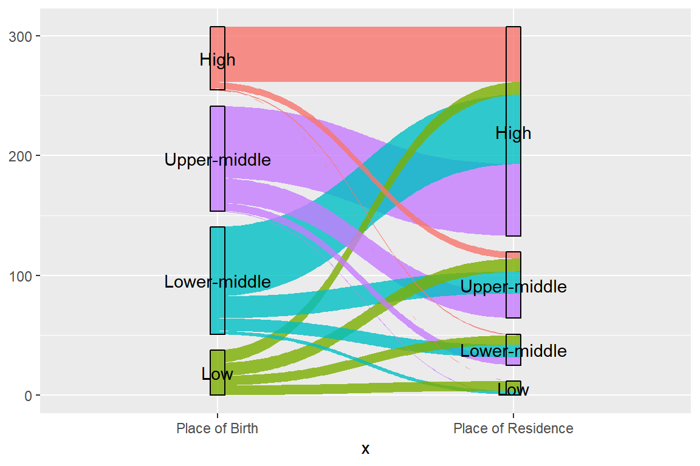
11.6.4 Labels
- Set up a label data frame to adjust position and alignment
p <- s %>%
distinct(x, y) %>%
mutate(h = as.numeric(x == "orig"),
n = h * -0.1 + 0.05)
p## # A tibble: 8 x 4
## x y h n
## <fct> <fct> <dbl> <dbl>
## 1 orig High 1 -0.05
## 2 orig Upper-middle 1 -0.05
## 3 orig Lower-middle 1 -0.05
## 4 orig Low 1 -0.05
## 5 dest High 0 0.05
## 6 dest Upper-middle 0 0.05
## 7 dest Lower-middle 0 0.05
## 8 dest Low 0 0.0511.6.5 Labels
- Pass the position coordinates to the ggplot code
ggplot(data = s,
mapping = aes(x = x, id = id, value = stock, split = y)) +
geom_parallel_sets(mapping = aes(fill = orig), alpha = 0.8,
axis.width = -0.05) +
geom_parallel_sets_axes(fill = "transparent", colour = "black",
axis.width = 0.05) +
guides(fill = "none") +
geom_parallel_sets_labels(angle = 0, hjust = p$h,
position = position_nudge(x = p$n)) +
scale_x_discrete(labels = c(orig = "Place of Birth",
dest = "Place of Residence"))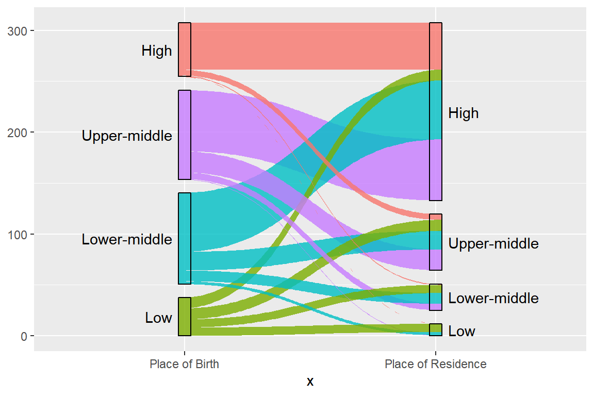
11.7 Spacing
11.7.1 Spacing
- We convert the Sankey plot to an alluvial plot by reducing the space separating the parallel sets to zero via the
separgument- Need to set
sepin all the geom functions for alignment. - Default is
sep = 0.05(5%) - Might need to reduce when have many regions
- Need to set
- In alluvial plots the y-axis are more meaningful
- Add y-axis labels via
labs()function
- Add y-axis labels via
- Set background to white using
theme_bw()function
ggplot(data = s,
mapping = aes(x = x, id = id, value = stock, split = y)) +
geom_parallel_sets(mapping = aes(fill = orig), alpha = 0.8,
axis.width = -0.05, sep = 0) +
geom_parallel_sets_axes(fill = "transparent", colour = "black",
axis.width = 0.05, sep = 0) +
guides(fill = "none") +
geom_parallel_sets_labels(angle = 0, hjust = p$h,
position = position_nudge(x = p$n, ), sep = 0) +
scale_x_discrete(labels = c(orig = "Place of Birth",
dest = "Place of Residence")) +
labs(y = "Migrants (millions)", x = "") +
theme_bw()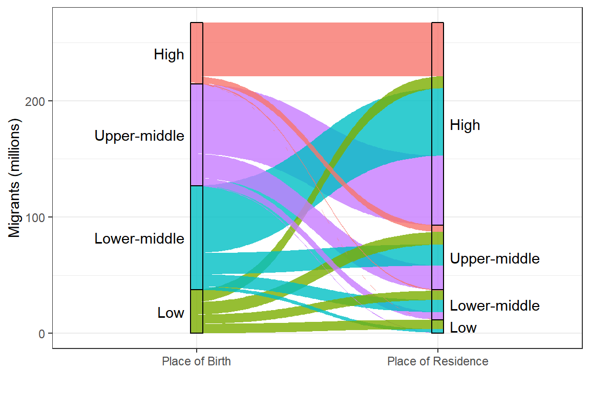
11.7.2 Exercise (ex9.R)
# 0. a) Load the KOSTAT2021.Rproj file.
# Run the getwd() below. It should print the directory where the
# KOSTAT2021.Rproj file is located.
getwd()
# b) Load the packages used in this exercise
library(tidyverse)
library(ggforce)
##
##
##
##
# 1. Run the code below to read in the migrant stock data from Gabon taken
# from Table 21-6 in Shryock & Siegel (1979)
ga <- read_csv("./data/gabon_1961_tidy.csv")
ga
# 2. Run the code below to remove the totals groups and migrants from abroad
d <- ga %>%
rename(orig = place_of_birth,
dest = place_of_enumeration) %>%
filter(sex == "total",
!orig %in% c("Grand total", "Abroad", "Total Gabon"),
dest != "Total") %>%
select(-sex)
d
# 3. Create a data frame s1 using the gather_set_data() function to organise the
# Gabon data in d ready for a Sankey plot using geom_parallel_sets
s1 <- d %>%
select(orig, dest, #####) %>%
#####(x = 1:#####)
s1
# 4. Run an initial plot on s1 to inspect for potential changes required to the
# the data frame
ggplot(data = s1,
mapping = aes(x = x, id = id, value = migrants, split = y)) +
geom_parallel_sets(mapping = aes(fill = orig))
# 5. Create a new data s2, based on d, that
# a. Sets migrant counts to zero for the migrant corridors for native born
# persons, where the place of enumeration is the same as the place of
# birth (orig == dest)
# b. Divide the migrant counts by one thousand
# c. Re-organises the data using the gather_set_data() function
# d. Sets both x and y to factors based on order of appearance using the
# fct_inorder() function (which broadly follows a north to south order)
s2 <- d %>%
mutate(migrants = ifelse(test = orig == #####, yes = #####, no = migrants),
migrants = migrants/#####) %>%
select(orig, dest, migrants) %>%
#####(x = 1:2) %>%
mutate(x = fct_inorder(x),
y = #####(y))
s2
levels(s2$y)
# 6. Create an object p that sets the horizontal positioning and nudge amount
# for each origin and destination label
p <- s2 %>%
#####(x, y) %>%
mutate(h = as.numeric(x == "orig"),
n = h * -0.1 + 0.05)
p
# 7. Complete the code below for a plot of the intra-regional migrant
# distributions for Gabon
ggplot(data = s2,
mapping = aes(x = x, id = id, value = #####, split = y)) +
geom_parallel_sets(mapping = aes(fill = orig), alpha = 0.8,
axis.width = -0.05) +
geom_parallel_sets_axes(fill = "transparent", colour = "black",
axis.width = #####) +
guides(fill = #####) +
geom_parallel_sets_labels(angle = #####, hjust = p$h,
position = position_nudge(x = p$n, )) +
scale_x_discrete(labels = c(orig = "Place of Birth",
dest = "Place of Residence")) +
labs(y = "Migrants (thousands)", x = "") +
theme_bw()
# 9. Run the code below to check the PDF (might not work on Mac - if so,
# manually open PDF file to view)
ggsave(filename = "./exercise/gabon1961.pdf", height = 8, width = 8)
file.show("./exercise/gabon1961.pdf")
Abel, Guy J. 2013. “Estimating global migration flow tables using place of birth data.” Demographic Research 28 (March): 505–46. https://doi.org/10.4054/DemRes.2013.28.18.
Abel, Guy J., and Joel E. Cohen. 2019. “Bilateral international migration flow estimates for 200 countries.” Scientific Data 6 (1): 82. https://doi.org/10.1038/s41597-019-0089-3.
Abel, Guy J., and Nikola Sander. 2014. “Quantifying Global International Migration Flows.” Science 343 (6178): 1520–22. https://doi.org/10.1126/science.1248676.
Barthélemy, Johan, and Thomas Suesse. 2018. “<b>mipfp</b> : An <i>R</i> Package for Multidimensional Array Fitting and Simulating Multivariate Bernoulli Distributions.” Journal of Statistical Software 86 (Code Snippet 2). https://doi.org/10.18637/jss.v086.c02.
Beer, Joop de, James Raymer, Rob van der Erf, and Leo van Wissen. 2010. “Overcoming the Problems of Inconsistent International Migration data: A New Method Applied to Flows in Europe.” European Journal of Population / Revue Européenne de Démographie 26 (4): 459–81. https://doi.org/10.1007/s10680-010-9220-z.
Bell, Martin, Marcus Blake, Paul Boyle, O. Duke-Williams, Philip H. Rees, John Stillwell, and Graeme John Hugo. 2002. “Cross-national comparison of internal migration: issues and measures.” Journal of the Royal Statistical Society: Series A (Statistics in Society) 165 (3): 435–64. https://doi.org/10.1111/1467-985X.00247.
Bell, Martin, Elin Charles-Edwards, Dorota Kupiszewska, Marek Kupiszewski, John Stillwell, and Yu Zhu. 2015. “Internal Migration Data Around the World: Assessing Contemporary Practice.” Population, Space and Place 21 (1): 1–17. https://doi.org/10.1002/psp.1848.
Bell, Martin, Elin Charles-Edwards, Philipp Ueffing, John Stillwell, Marek Kupiszewski, and Dorota Kupiszewska. 2015. “Internal Migration and Development: Comparing Migration Intensities Around the World.” Population and Development Review 41 (1): 33–58. https://doi.org/10.1111/j.1728-4457.2015.00025.x.
Bell, Martin, and Salut Muhidin. 2009. “Cross-National Comparisons of Internal Migration.” Human Development Reports. United Nations Development Programme.
Bernard, Aude, Martin Bell, and Elin Charles-Edwards. 2014. “Improved measures for the cross-national comparison of age profiles of internal migration.” Population Studies 68 (2): 179–95. https://doi.org/10.1080/00324728.2014.890243.
Bogue, Donald J, Kenneth Hinze, and Michael White. 1982. Techniques of Estimating Net Migration. Chicago, USA: Community; Family Study Center. University of Chicago.
Butler, Declan. 2017. “What the numbers say about refugees.” Nature 543 (7643): 22–23. https://doi.org/10.1038/543022a.
Courgeau, Daniel. 1973. “Migrations et découpages du territoire.” Population (French Edition) 28 (3): 511. https://doi.org/10.2307/1530704.
———. 1979. “Migrants and migrations.” Population (English Edition) 3: 1—–35.
Deming, W. Edwards, and Frederick F Stephan. 1940. “On a Least Squares Adjustment of a Sampled Frequency Table When the Expected Marginal Totals are Known.” The Annals of Mathematical Statistics 11 (4): 427–44. https://doi.org/10.1214/aoms/1177731829.
Edwards, Robin, Maksym Bondarenko, Alessandro Sorichetta, and Andrew J. Tatem. 2021. “Unconstrained subnational Population Weighted Density in 2000, 2005, 2010, 2015 and 2020 ( 100m resolution ).” Southampton, UK: WorldPop, University of Southampton, UK. https://doi.org/10.5258/SOTON/WP00703.
Gu, Z., Lei Gu, Roland Eils, Matthias Schlesner, and Benedikt Brors. 2014. “circlize implements and enhances circular visualization in R.” Bioinformatics 30 (19): 2811–12. https://doi.org/10.1093/bioinformatics/btu393.
Imhoff, Evert van, Nicole van der Gaag, Leo van Wissen, and Philip H. Rees. 1997. “The selection of internal migration models for European regions.” International Journal of Population Geography IJPG 3 (2): 137–59. https://doi.org/10.1002/(SICI)1099-1220(199706)3:2<137::AID-IJPG63>3.0.CO;2-R.
Krzywinski, Martin, Jacqueline Schein, Inanç Birol, Joseph Connors, Randy Gascoyne, Doug Horsman, Steven J. Jones, and Marco A. Marra. 2009. “Circos: An information aesthetic for comparative genomics.” Genome Research 19 (9): 1639–45. https://doi.org/10.1101/gr.092759.109.
Lee, Everett S. 1966. “A Theory of Migration.” Demography 3 (1): 47. https://doi.org/10.2307/2060063.
Lomax, Nik, and Paul Norman. 2016. “Estimating population attribute values in a table: ‘Get me started in’ iterative proportional fitting.” Professional Geographer 68 (3): 451–61. https://doi.org/10.1080/00330124.2015.1099449.
Lovelace, Robin, Mark Birkin, Dimitris Ballas, and Eveline van Leeuwen. 2015. “Evaluating the Performance of Iterative Proportional Fitting for Spatial Microsimulation: New Tests for an Established Technique.” Journal of Artificial Societies and Social Simulation 18 (2): 1–15. https://doi.org/10.18564/jasss.2768.
Plane, David A. 1981. “Estimation of Place-to-Place Migration Flows from Net Migration Totals: A Minimum Information Approach.” International Regional Science Review 6 (1): 33–51. https://doi.org/10.1177/016001768100600103.
Raymer, James. 2007. “The estimation of international migration flows: a general technique focused on the origin–destination association structure.” Environment and Planning A 39 (4): 985–95. https://doi.org/10.1068/a38264.
Raymer, James, Alberto Bonaguidi, and Alessandro Valentini. 2006. “Describing and projecting the age and spatial structures of interregional migration in Italy.” Population, Space and Place 12 (5): 371–88. https://doi.org/10.1002/psp.414.
Rees, Philip H., Martin Bell, Marek Kupiszewski, Dorota Kupiszewska, Philipp Ueffing, Aude Bernard, Elin Charles-Edwards, and John Stillwell. 2016. “The Impact of Internal Migration on Population Redistribution: an International Comparison.” Population, Space and Place, no. April. https://doi.org/10.1002/psp.2036.
Rogers, Andrei. 1975. Introduction to Multiregional Mathematical Demography. New York, New York, USA: Wiley.
———. 1990. “Requiem for the Net Migrant.” Geographical Analysis 22 (4): 283–300. http://onlinelibrary.wiley.com/doi/10.1111/j.1538-4632.1990.tb00212.x/abstract.
Rogers, Andrei, and Luis J. Castro. 1981. “Model Migration Schedules.” RR-81-30. Vol. 81. Laxenburg, Austria: International Institute for Applied Systems Analysis. http://webarchive.iiasa.ac.at/Admin/PUB/Documents/RR-81-030.pdf.
Rogers, Andrei, and Jani S Little. 1994. “An International Journal of Parameterizing age patterns of demographic rates with the multiexponential model schedule.” Mathematical Population Studies 4 (3): 175–95. https://doi.org/10.1080/08898489409525372.
Rogers, Andrei, and James Raymer. 1998. “The Spatial Focus of US Interstate Migration Flows.” International Journal of Population Geography 4 (1): 63–80. https://doi.org/10.1002/(SICI)1099-1220(199803)4%3A1<63%3A%3AAID-IJPG87>3.0.CO%3B2-U.
———. 1999. “Estimating the regional migration patterns of the foreign-born population in the United States: 1950-1990.” Mathematical Population Studies 7 (3): 181–216, 307. https://doi.org/10.1080/08898489909525457.
Rogers, Andrei, James Raymer, and Jani Little. 2010. The Indirect Estimation of Migration. Vol. 26. The Springer Series on Demographic Methods and Population Analysis. Dordrecht: Springer Netherlands. https://doi.org/10.1007/978-90-481-8915-1.
Rogers, Andrei, and John Watkins. 1987. “General Versus Elderly Interstate Migration and Population Redistribution in the United States.” Research on Aging 9 (4): 483–529. https://doi.org/10.1177/0164027587094002.
Rogers, Andrei, Frans Willekens, Jani Little, and James Raymer. 2002. “Describing migration spatial structure.” Papers in Regional Science 81 (1): 29–48. https://doi.org/10.1007/s101100100090.
Rogers, Andrei, Frans Willekens, and James Raymer. 2003. “Imposing Age and Spatial Structures on Inadequate Migration-Flow Datasets.” The Professional Geographer 55 (1): 56–69. https://doi.org/10.1111/0033-0124.01052.
Rogerson, Peter A. 1990. “Migration analysis using data with time intervals of differing widths.” Papers of the Regional Science Association 68 (1981): 97–106. https://link.springer.com/article/10.1007/BF01933910.
Shryock, Henry S., and Jacob S. Siegel. 1976. The Methods and Materials of Demography. Edited by Edward G. Stockwell. Condensed. San Diego, California: Academic Press.
Siegel, Jacob S., and C. Horace Hamilton. 1952. “Some Considerations in the Use of the Residual Method of Estimating Net Migration.” Journal of the American Statistical Association 47 (259): 475–500. https://doi.org/10.1080/01621459.1952.10501186.
Stillwell, John, Martin Bell, Philipp Ueffing, K. Daras, Elin Charles-Edwards, Marek Kupiszewski, and Dorota Kupiszewska. 2016. “Internal migration around the world: comparing distance travelled and its frictional effect.” Environment and Planning A 48 (8): 1657–75. https://doi.org/10.1177/0308518X16643963.
United Nations Department of Economic and Social Affairs Population Division. 1983. Methods of measuring internal migration. New York, New York, USA: United Nations Publication. https://www.un.org/en/development/desa/population/publications/manual/migration/measuring-migration.asp.
———. 1992. Preparing Migration Data for Subnational Population Projections. http://www.un.org/esa/population/techcoop/IntMig/migdata{\_}popproj/migdata{\_}popproj.html.
———. 2020. “International Migrant Stock 2020 (United Nations database, POP/DB/MIG/Stock/Rev.2020).” New York, New York, USA: United Nations Department of Economic; Social Affairs/Population Division. https://doi.org/10.18356/b4899381-en.
Willekens, Frans. 1999. “Modeling approaches to the indirect estimation of migration flows: from entropy to EM.” Mathematical Population Studies 7 (3): 239–78, 308. https://doi.org/10.1080/08898489909525459.
Wilson, Tom. 2010. “Model migration schedules incorporating student migration peaks.” Demographic Research 23 (8): 191–222. https://doi.org/10.4054/DemRes.2010.23.8.
References
Butler, Declan. 2017. “What the numbers say about refugees.” Nature 543 (7643): 22–23. https://doi.org/10.1038/543022a.
———. 2020. “International Migrant Stock 2020 (United Nations database, POP/DB/MIG/Stock/Rev.2020).” New York, New York, USA: United Nations Department of Economic; Social Affairs/Population Division. https://doi.org/10.18356/b4899381-en.